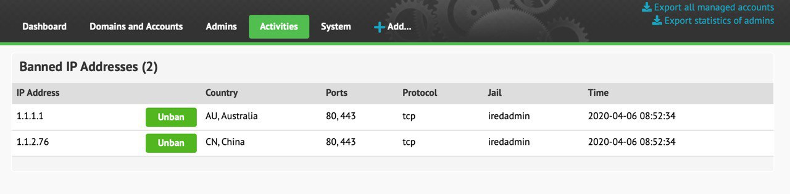

Since iRedMail-1.2, Fail2ban is configured to store banned IP addresses in SQL database. If you run iRedAdmin-Pro or your own web admin panel, it will be very easy to check and manage banned IP addresses. But if you don't run iRedAdmin-Pro or don't have custom web admin panel, this integration is totally optional.
With this SQL integration, to unban an IP address from web admin panel, you can
simply update value of column banned.remove to 1, then wait for up to one
minute, a cron job will call fail2ban-client to actually unban it.
With iRedAdmin-Pro, you can login as global admin, go to
Activities -> Banned IP Addresses, then click the Unban button to unban it.

When some (bad) client triggers the ban, Fail2ban will perform actions defined
in action = parameter in jail config file. For example, in jail dovecot-iredmail
(/etc/fail2ban/jail.d/dovecot.local):
[dovecot-iredmail]
enabled = ...
filter = ...
logpath = ...
action = iptables-multiport[name=dovecot, port="80,443,25,587,465,110,995,143,993,4190", protocol=tcp]
Action name iptables-multipart maps to commands defined in
/etc/fail2ban/action.d/iptables-multiport.conf for different fail2ban actions.
For example:
[Definition]
# Notes.: command executed once at the start of Fail2Ban.
actionstart = ...
# Notes.: command executed once at the end of Fail2Ban
actionstop = ...
# Notes.: command executed once before each actionban command
actioncheck = ...
# Notes.: command executed when banning an IP. Take care that the
# command is executed with Fail2Ban user rights.
actionban = ...
# Notes.: command executed when unbanning an IP. Take care that the
# command is executed with Fail2Ban user rights.
actionunban = ...
In this tutorial, we will add a custom action config file and update jail config files to use this action.
We will create a new database named fail2ban to store banned IP addresses,
also a SQL user fail2ban.
root user:cd /tmp
wget https://github.com/iredmail/iRedMail/raw/1.3/samples/fail2ban/sql/fail2ban.mysql
Run SQL commands below as MySQL root user:
Warning
Please replace <my-secret-password> by your own strong password.
CREATE DATABASE fail2ban DEFAULT CHARACTER SET utf8 COLLATE utf8_general_ci;
GRANT ALL ON fail2ban.* TO 'fail2ban'@'localhost' IDENTIFIED BY '<my-secret-password>';
USE fail2ban;
SOURCE /tmp/fail2ban.mysql;
/root/.my.cnf-fail2ban. Script will read MySQL
credential from this file instead of storing plain password in script.[client]
host="127.0.0.1"
port="3306"
user="fail2ban"
password="<my-secret-password>"
We will create a new database named fail2ban to store banned IP addresses,
also a SQL user fail2ban.
root user, then switch to PostgreSQL daemon user
postgres and connect to SQL server:cd /tmp
wget https://github.com/iredmail/iRedMail/raw/1.3/samples/fail2ban/sql/fail2ban.pgsql
su - postgres
psql -d template1
Run SQL commands below:
Warning
Please replace <my-secret-password> by your own strong password.
CREATE DATABASE fail2ban WITH TEMPLATE template0 ENCODING 'UTF8';
CREATE USER fail2ban WITH ENCRYPTED PASSWORD '<my-secret-password>' NOSUPERUSER NOCREATEDB NOCREATEROLE;
ALTER DATABASE fail2ban OWNER TO fail2ban;
-- PostgreSQL will prompt to input password for user "fail2ban" with command below.
\c fail2ban fail2ban;
\i /tmp/fail2ban.pgsql;
~/.pgpass under PostgreSQL daemon user's
HOME directory. Script will read SQL credential from this file.*:*:*:fail2ban:<my-secret-password>
On Linux, run commands below as root user:
wget https://github.com/iredmail/iRedMail/raw/1.3/samples/fail2ban/action.d/banned_db.conf
mv banned_db.conf /etc/fail2ban/action.d/
wget https://github.com/iredmail/iRedMail/raw/1.3/samples/fail2ban/bin/fail2ban_banned_db
mv fail2ban_banned_db /usr/local/bin/
chmod 0550 /usr/local/bin/fail2ban_banned_db
File /etc/fail2ban/action.d/banned_db.conf indicates we now have a new action
named banned_db (it's file name without extension). Feel free to open this
file and check what it does.
Script /usr/local/bin/fail2ban_banned_db will read SQL username and password
from /root/.my.cnf-fail2ban (OpenLDAP/MySQL/MariaDB backends) or
~postgresql/.pgpass (PostgreSQL backend), then connect to SQL server and
add or remove banned IP addresses.
banned_dbNow go to directory /etc/fail2ban/jail.d/ and update config files for the jails you
want to store banned IP in SQL db. Let's take dovecot.local for example.
action = line in original file looks like this:[dovecot-iredmail]
...
action = iptables-multiport[name=dovecot, port="80,443,25,587,465,110,995,143,993,4190", protocol=tcp]
Add our new action under existing action:
Warning
banned_db[name=, ...] line must be same as
the jail name which is defined in the first line [dovecot-iredmail].
In above sample, jail name is dovecot-iredmail.
Do NOT copy the name used in iptables-multiport[...] line.action = parameter for a jail.[dovecot-iredmail]
...
action = iptables-multiport[name=dovecot, port="80,443,25,587,465,110,995,143,993,4190", protocol=tcp]
banned_db[name=dovecot-iredmail, port="80,443,25,587,465,110,995,143,993,4190", protocol=tcp]
That's it. It's recommend to enable this new action banned_db for all jails.
Now restart fail2ban service to load modified config files.
Now add a cron job for root user with command crontab -e -u root:
# Fail2ban: Unban IP addresses pending for removal (stored in SQL db).
* * * * * /bin/bash /usr/local/bin/fail2ban_banned_db unban_db
It runs every minute and queries SQL database to get banned IP addresses which are pending for removal.
Script /usr/local/bin/fail2ban_banned_db detects whether commands
geoiplookup and geoiplookup6 exist, if exist, it runs the command to query
country of banned IP address and store it in SQL database.
Both commands are offered by GeoIP related packages, please install them.
yum -y install GeoIP GeoIP-data
yum -y install GeoIP GeoIP-GeoLite-data
apt -y install geoip-bin geoip-database
pkg_add GeoIP geolite-country
Please add Fail2ban SQL credential in iRedAdmin-Pro config file
/opt/www/iredadmin/settings.py, then restart iredadmin service. If you're
still running Apache web server, you should restart Apache service instead.
Attention
If you're running PostgreSQL backend, the port number is 5432.
fail2ban_enabled = True
fail2ban_db_host = '127.0.0.1'
fail2ban_db_port = '3306'
fail2ban_db_name = 'fail2ban'
fail2ban_db_user = 'fail2ban'
fail2ban_db_password = '<my-secret-password>'
Attention
We use MySQL for example here.
Run fail2ban-client command as root user to ban 2 IP addresses like below:
fail2ban-client set dovecot-iredmail banip 1.1.1.1
fail2ban-client set dovecot-iredmail banip 1.1.1.2
You can see the banned IP address with command fail2ban-client status <jail>:
fail2ban-client status dovecot-iredmail
Command output:
Status for the jail: dovecot-iredmail
|- Filter
| |- Currently failed: 0
| |- Total failed: 0
| `- File list: ...
`- Actions
|- Currently banned: 2
|- Total banned: 2
`- Banned IP list: 1.1.1.2 1.1.1.1
Now run command below to query SQL table fail2ban.banned as root user:
mysql fail2ban -e "SELECT * FROM banned"
You should see the command output like below:
+----+---------+-------+----------+------------------+------------------+---------------+---------------------+--------+
| id | ip | ports | protocol | jail | hostname | country | timestamp | remove |
+----+---------+-------+----------+------------------+------------------+---------------+---------------------+--------+
| 3 | 1.1.1.1 | 22 | tcp | dovecot-iredmail | ob66.localdomain | AU, Australia | 2020-04-15 13:34:57 | 0 |
| 4 | 1.1.1.2 | 22 | tcp | dovecot-iredmail | ob66.localdomain | AU, Australia | 2020-04-15 13:34:58 | 0 |
+----+---------+-------+----------+------------------+------------------+---------------+---------------------+--------+
Now run fail2ban-client command to unban IP and query SQL table
fail2ban.banned again, you should see unbanned IP is gone:
fail2ban-client set dovecot-iredmail unbanip 1.1.1.1
Now run command as root user to update SQL column banned.remove=1 to
simulate the unban triggered by iRedAdmin-Pro:
mysql fail2ban -e "UPDATE banned SET remove=1 WHERE ip='1.1.1.2'"
Run script /usr/local/bin/fail2ban_banned_db with argument unban_db as root user:
/usr/local/bin/fail2ban_banned_db unban_db
Again, query SQL table fail2ban.banned as root user, you should see the IP
stored in SQL db with remove=1 is gone, and unbanned in fail2ban too:
mysql fail2ban -e "SELECT * FROM banned"
fail2ban-client status dovecot-iredmail
If there's something, you should see related log in syslog log file or Fail2ban log file:
/var/log/syslog or /var/log/messages/var/log/fail2ban.log or /var/log/fail2ban/fail2ban.logIf you can not solve the error, feel free to create a new forum topic and paste related log in your post.